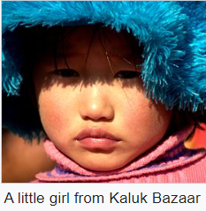

DEMOGRAPHICS

Sikkim is India's least populous state, with 610,577 inhabitants according to the 2011 census.
Sikkim is also one of the least densely populated Indian states, with only 86 persons per square kilometre.
However, it has a high population growth rate, averaging 12.36% per cent between 2001 and 2011.
The sex ratio is 889 females per 1,000 males, with a total of 321,661 males and 286,027 females recorded in 2011.
With around 98,000 inhabitants as of 2011, the capital Gangtok is the most significant
urban area in the mostly rural state; in 2005, the urban population in Sikkim constituted around 11.06 per cent of the total.
In 2011, the average per capita income in Sikkim stood at ₹ 81,159 (US$1,305).